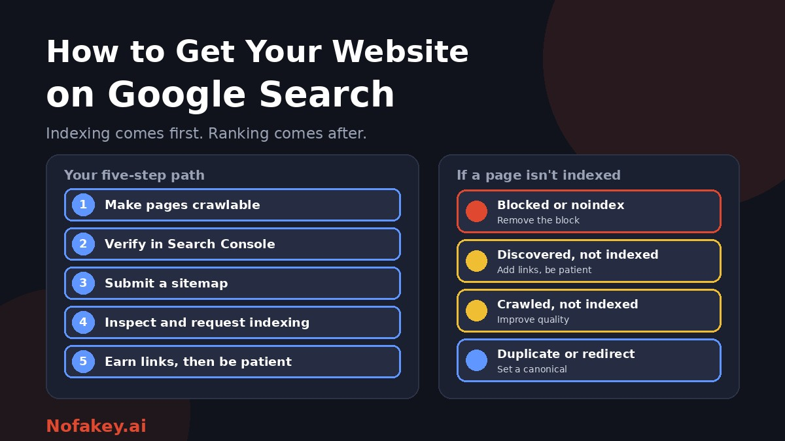

You have built a website, but searching for it on Google turns up nothing. Websites do not appear in search results automatically. Google has to find your pages, crawl them, and decide whether to add them to its index. This guide walks you through each step, from checking whether you are already indexed to fixing the most common problems, and explains what no one can promise you.
How Google adds a website to search
- Discovery. Google finds a URL, usually through links from other pages, a sitemap, or a request you submit.
- Crawling. Google's crawler visits the page and reads it. It cannot crawl pages that are blocked, broken or hidden behind logins.
- Indexing. Google decides whether the page is worth storing and shows it in results. Not every crawled page is indexed.
- Ranking. When someone searches, Google orders indexed pages by relevance and quality. A page can be indexed and still rank poorly.
Google no longer offers a public "add your site" form. The supported route is Google Search Console, which is free.
Step 1: Check whether you are already indexed
- Quick check: search for
site:yourdomain.comin Google. If results appear, some pages are indexed. This is a rough guide, not an exact count. - Reliable check: use the URL Inspection tool in Search Console for a specific page. It tells you whether the page is on Google and why not if it is missing.
- Do not assume a new site is invisible. A few pages may be indexed even when others are not.
Step 2: Make sure your site can be crawled and indexed
| Check | What to look for |
|---|---|
| The page loads | It returns a normal successful response, not an error or a redirect loop |
| No accidental noindex | No noindex tag in the page's head or response headers |
| robots.txt is not blocking you | No rule that disallows the pages or the whole site |
| Secure and accessible | Served over HTTPS, working on mobile, and not behind a login or paywall for the crawler |
| Real links | Pages are reachable through normal links, not only through scripts or forms |
| Content is visible | Key text is in the page, not only loaded in ways a crawler may not see |
| One clear version | Each page has a canonical URL, and duplicates point to the preferred version |
| Reasonable speed | Pages load quickly enough that crawling and users are not held up |
A very common mistake is leaving a "do not index" setting switched on from the build stage. A page with this tag will not be indexed:
<meta name="robots" content="noindex">And a robots.txt file that blocks everything looks like this. Remove or change it if you see it:
User-agent: *
Disallow: /A healthy robots.txt for most sites allows crawling and points to the sitemap:
User-agent: *
Allow: /
Sitemap: https://www.example.com/sitemap.xmlReplace the example address with your own. Static hosting, including simple hosts such as GitHub Pages, works fine for indexing, as long as the files above are at the root of your site and your pages link to each other.
Step 3: Verify your site in Google Search Console
- Sign in to Search Console with a Google account.
- Add a property. A domain property covers all subdomains and protocols and is verified with a DNS record. A URL-prefix property covers one exact address.
- Verify ownership. For a URL-prefix property you can usually use an HTML file, an HTML tag, or an existing Google Analytics or Tag Manager setup on your pages.
- Wait for the first data. Reports can take a few days to fill in.
Keep the verification method in place permanently, or you may lose access.
Step 4: Create and submit a sitemap
A sitemap is a file listing the pages you want found. It helps Google discover new and updated pages, especially on new sites with few links. A minimal sitemap looks like this:
<?xml version="1.0" encoding="UTF-8"?>
<urlset xmlns="http://www.sitemaps.org/schemas/sitemap/0.9">
<url>
<loc>https://www.example.com/</loc>
<lastmod>2026-11-16</lastmod>
</url>
<url>
<loc>https://www.example.com/blog/my-first-post.html</loc>
</url>
</urlset>- Generate the sitemap. Most website platforms and plugins can do this for you, or you can write one by hand for a small site.
- Check it opens at an address like
/sitemap.xmland lists only pages you want indexed, with full, correct addresses. - Submit it in Search Console under Sitemaps, then check that the status says it was read successfully.
- Mention it in robots.txt, as in the example above.
- Keep it updated when you add or remove pages.
Note that an HTML sitemap page for visitors is a nice extra, but it is a different thing from the XML file search engines read.
Step 5: Request indexing for your key pages
- Open the URL Inspection tool in Search Console and paste the page address.
- Read the result. It shows whether the page is indexed and, if not, the likely reason.
- Fix any issue first, then choose Request indexing.
- Prioritise. Start with your homepage and most important pages. There is a limit on requests, and it is not a way to force indexing.
- Check back after a few days. Do not keep resubmitting the same page.
Step 6: Help Google find and trust your site
- Link your pages together. Make sure every important page is reachable from your homepage or navigation through plain links.
- Earn links from other sites, through genuinely useful content, partnerships, directories relevant to your field and mentions from real organisations. One good link from a trusted site can help Google discover you.
- Use your social profiles and other properties to point to the site, which helps discovery even if it does not directly boost ranking.
- Publish something worth indexing. Original, useful, accurate pages are more likely to be kept. See AI text detectors for SEO content for a pre-publish quality checklist.
- Local businesses should also set up and verify a Google Business Profile, which is separate from website indexing and helps with maps and local results.
- Consider Bing too. Bing Webmaster Tools works much like Search Console.
Step 7: Read the indexing report and fix problems
Search Console's page indexing report lists pages and why they are or are not indexed. These are the usual reasons:
| Status | What it usually means | What to do |
|---|---|---|
| Excluded by noindex | The page tells Google not to index it | Remove the noindex tag if you want the page indexed, and request indexing |
| Blocked by robots.txt | A rule stops Google crawling the page | Edit robots.txt so important pages are allowed |
| Discovered, currently not indexed | Google knows the page exists but has not crawled it yet | Add internal and external links, make sure the site is fast, and be patient |
| Crawled, currently not indexed | Google visited and chose not to add it | Improve usefulness and originality, merge thin pages, add links, then wait |
| Duplicate or alternate page with canonical | Google treats the page as a copy of another | Check that the canonical points where you intend, or differentiate the content |
| Soft 404 | The page looks empty or like an error although it loads | Add real content or return a correct error code |
| Page with redirect | The URL redirects to another, so the target is indexed instead | Usually fine. Submit the final address |
| Not found (404) | The page does not exist | Fix the link, restore the page or redirect it |
If many pages sit in "crawled, not indexed," the usual cause is quality, not a technical fault. See AI content audit for SEO agencies for a framework to review thin or duplicate pages.
How long does it take?
- Days to weeks is typical for a new site, and some pages may take longer or never be indexed.
- Established, frequently updated sites usually see new pages picked up faster.
- No one controls the timing. Anyone who promises a specific indexing date is guessing.
- Indexed is not ranked. Once pages are in, you can track positions over time. See keyword rank checker for how to do that accurately.
What to avoid, and the scams to watch for
- Paying for "guaranteed" indexing or first-page results. No one can guarantee either, and Google's own tools are free.
- Buying links or joining link schemes. They break Google's guidelines and can hurt you.
- Mass-producing thin or copied pages. This is what spam policies target. See does Google penalize AI-generated content?
- Spamming resubmissions or using tools that promise instant indexing. They rarely help and can waste your time and money.
- Unsolicited emails claiming your site is "not on Google" or offering to fix it for a fee. Many are scams. See how to spot AI-generated scam emails. If a message looks suspicious, paste it into our free checker for a quick first read.
- Giving a stranger access to your Search Console or domain. Only add trusted people, and review your list of users regularly.
Quick launch checklist
- Pages load over HTTPS, work on mobile and have no accidental noindex or robots block.
- Each page has a clear title, a canonical address and links to and from other pages.
- You have an XML sitemap at the root and a robots.txt that points to it.
- The site is verified in Search Console, and the sitemap is submitted.
- Your homepage and key pages have been inspected and indexing requested.
- You have started earning a few real links and mentions.
- You check the indexing report weekly and fix issues as they appear.
- You focus on useful, original content, and treat rankings as a later step.
Conclusion
Getting on Google Search means being found, crawled and judged worth indexing. Clear technical blockers, verify in Search Console, submit a sitemap, request indexing for important pages, link your pages together and earn a few real links. Then be patient, read the indexing report and keep improving the content. Nobody can guarantee indexing or rankings, and anyone who does is selling something. Find more guides on the Nofakey.ai blog.
Frequently asked questions
How do I get my website to show up on Google?
Make sure your pages are crawlable and not blocked, verify your site in Google Search Console, submit an XML sitemap, request indexing for key pages with the URL Inspection tool, and help Google find you through links from other sites. Indexing is not guaranteed.
How long does it take for Google to index a new website?
It can take from a few days to several weeks, and some pages are never indexed. Speed depends on factors such as site quality, links and how easily Google can find and crawl the pages.
Why is my page crawled but not indexed?
Google visited the page but chose not to add it. Common reasons are thin, duplicate or low-value content, or a site Google does not yet consider important. Improve the page’s usefulness and originality, add internal links and be patient.
Does requesting indexing guarantee my page will appear?
No. It asks Google to crawl the page sooner, but Google decides whether to index it. There are also usage limits, so prioritise your most important pages.
Is it safe to pay for a service that promises to get my site on Google?
Be very cautious. No one can guarantee indexing or rankings, and Google’s own tools are free. Unsolicited offers of guaranteed first-page results are a common scam.
Got a suspicious message or link to check?
Run it through the checker